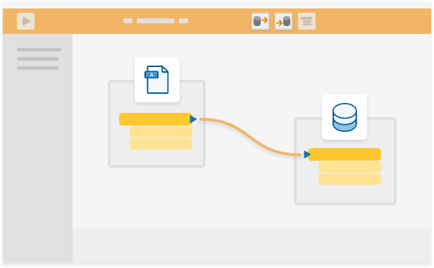

After completing this lesson, you’ll be able to:
Jennifer has a problem. She works as a GIS Specialist for a city government. Her organization is facing a significant challenge: how can they get raw crime data provided by their police department into a GIS?
Let’s find out how she can solve this data integration problem with FME through the steps of connect, transform, and automate.
The crime data is in a MySQL database and needs to be loaded into an Esri ArcGIS geodatabase for both public and internal web mapping applications. The crime data does not have a coordinate system or any other spatial data associated with it except street addresses.
Jennifer uses the desktop authoring software FME Desktop to connect the police crime data to a geodatabase. She does this by adding a MariaDB (MySQL) Reader and an Esri ArcGIS Geodatabase Writer, then clicking and dragging to connect them. Using FME, Jennifer doesn’t have to write a single line of code.

Next, Jennifer uses FME Desktop to author a workflow, which we call a workspace, that accomplishes multiple goals:
Using objects called transformers, Jennifer is able to restructure her data to fit the needs of her destination system.

If Jennifer only needs to integrate this data once, she can run her workspace in FME Desktop and she’s done. However, if she needs to load data on a continuous basis, she can publish it to FME Server. With FME Server she can run her workspace automatically whenever new data becomes available. She also sets up email notifications to be sent to the FME Server Administrator when the workspace succeeds or fails.